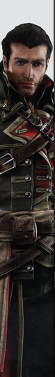
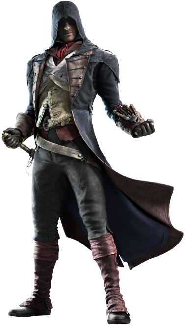
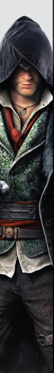
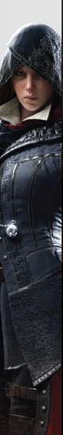

Altaïr Ibn-La'Ahad
Altaïr Ibn-La'Ahad (1165 – 1257) foi um membro sírio da Irmandade Levantina dos Assassinos
durante a Alta Idade Média, chegando à posição de Mestre Assassino e servindo como o Mentor de
1191 à 1228, e então de 1247 até sua morte em 1257. Durante o seu tempo como Mentor, Altaïr
realizou inúmeras descobertas, invenções e mudanças que desenvolveram massivamente a progressão
das táticas e ideais da Irmandade.
Ezio Auditore de Firenze
Ezio Auditore da Firenze (1459 – 1524) foi um nobre Florentino durante a Renascença e, sem o
conhecimento da maioria dos historiadores e filósofos, o Mentor da Irmandade Italiana dos
Assassinos, um título que ocupou de 1503 a 1513. Ele também é um ancestral de William e Desmond
Miles, assim como de Clay Kaczmarek.
Connor Kenway
Ratonhnhaké:ton (1756 – desconhecido), ou pelo nome adotado, Connor, foi um Mestre Assassino da
Irmandade Colonial dos Assassinos durante o período da Guerra Revolucionária Americana
posteriormente Mentor da renascida Irmandade Americana. Nascido em uma tribo Kanien'kehá:ka,
Kanatahseton, ele é um ancestral de Desmond Miles, através da linha paterna.
Edward Kenway
Edward James Kenway (1693 – 1735) foi um corsário e depois pirata britânico, nascido no País de
Gales, e um membro da Irmandade Caribenha e Irmandade Britânica de Assassinos.Edward é outro
ancestral de Desmond, que em AC 4 já está morto, mas que é citado por conta desta ligação. É ele
também que reconstrói a Ordem dos Assassinos, após passarem por uma enorme crise, antes dos
eventos de AC 3.


Shay Patrick Cormac
Shay Patrick Cormac (1731 – desconhecido) foi um membro do Rito Colonial da Ordem dos Templários
durante o século XVIII.
É o personagem central de Assassin’s Creed Rogue e, apesar disso, não é bem um assassino. Ele
começa sua aventura como um assassino da Ordem, mas logo trai seus mestres e se torna um
Templário.
É com Shay que o jogador descobre um pouco mais sobre os Templários.
Arno Dorian
Arno Victor Dorian (1768 – desconhecido) foi um Assassino franco-austríaco ativo durante a época
da Revolução Francesa. Um antepassado de Callum Lynch e filho do Assassino Charles Dorian, que
foi morto por Shay Cormac, Arno foi adotado por François de la Serre, o Grão-Mestre da Ordem dos
Templários na França. Ele cresceu ao lado da filha de De la Serre, Élise, sua futura amante.
Arno foi introduzido aos Assassinos por Pierre Bellec.


Jacob Frye
Sir Jacob Frye (1847 – desconhecido) foi um Mestre Assassino da Irmandade Britânica dos
Assassinos, ativo em Londres durante a era vitoriana, o irmão gêmeo mais novo de Evie Frye, e o
filho de Ethan e Cecily Frye. Mais tarde, tornou-se membro da Ordem da Sagrada Jarreteira da
Rainha Vitória, ele também é o avô de Lydia Frye.

Evie Frye
Dama Evie Frye (1847 - desconhecido) foi uma Mestra Assassina da Irmandade Britânica ativa em
Londres durante a era vitoriana e a irmã gêmea mais velha de Jacob Frye. Ela também era tia-avó
de Lydia Frye.
Originários de Crawley, Evie e seu irmão mudaram-se para Londres para tomar o controle da cidade
dos Templários e ajudar as massas atingidas pela pobreza, depois que seu pai morreu de causas
naturais.
Bayek
Bayek de Siuá (c. 86 AEC - desconhecido) foi o último dos Medjai do Egito Antigo, proveniente do
vilarejo remoto de Siuá, e um dos primeiros membros e fundadores dos Ocultos, que eventualmente
evoluiriam para a Irmandade dos Assassinos, junto com sua esposa Aya.
Aya
Aya (c. 79 AEC - desconhecido) foi uma agente greco-egípcia de Cleópatra, a esposa de Bayek e
uma das figuras responsáveis pela origem dos Ocultos, que eventualmente evoluíram e tornaram-se
a Irmandade dos Assassinos.
Alexios
Alexios, durante a infância recebeu de sua mãe a herança de família, a Lança de Leônidas, uma
arma mística de grande poder usada pelo mesmo há mais de 50 anos antes. Um dia, Alexios foi
condenado à morte e atirado de um rochedo pelo seu próprio pai, Nikolaos.
Anos depois, Alexios se tornou um mercenário, e em algum momento conheceu
Barnabas, o capitão de um trirreme chamado Adrestia, que tornou-se seu lar.
(mesma história de Kassandra)
Kassandra
Kassandra, durante a infância recebeu de sua mãe a herança de família, a Lança de Leônidas, uma
arma mística de grande poder usada pelo mesmo há mais de 50 anos antes. Um dia, Kassandra foi
condenada à morte e atirada de um rochedo pelo seu próprio pai, Nikolaos.
Anos depois, Kassandra se tornou uma mercenária, e em algum momento conheceu
Barnabas, o capitão de um trirreme chamado Adrestia, que tornou-se seu lar.
(mesma história de Alexios)